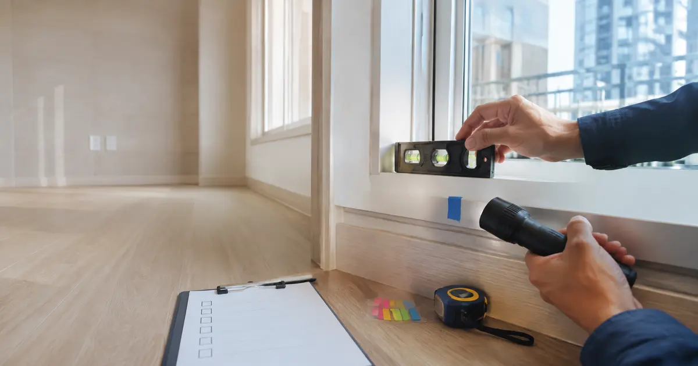
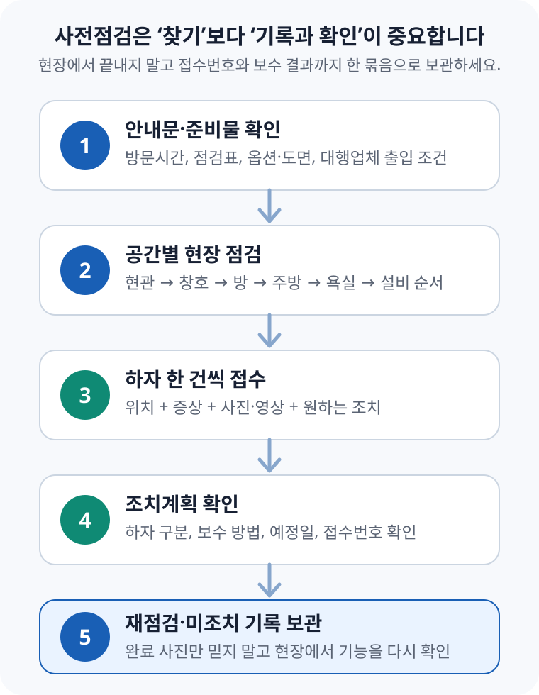

신축 아파트 사전점검 — 하자 기록부터 보수 확인까지

사전점검의 목표는 하자를 많이 찾는 것이 아니라 입주 전에 고쳐야 할 문제를 재현 가능한 기록으로 접수하고, 보수 결과까지 확인하는 것입니다. 현장에서는 공간을 한 방향으로 돌며 점검하고, 문제 하나마다 ‘위치·증상·사진·요청사항’을 따로 남기세요. 완료 안내를 받으면 사진만 보지 말고 창문·문·배수·전원처럼 작동이 필요한 항목을 다시 시험해야 합니다.
1. 사전점검은 언제, 무엇을 할 수 있는 제도인가
주택법 제48조의2는 사업주체가 사용검사를 받기 전에 입주예정자가 주택을 방문해 공사 상태를 점검할 수 있게 하도록 정합니다. 입주예정자는 균열·침하·파손·들뜸·누수처럼 안전·기능 또는 미관에 지장을 주는 결함이 있다고 판단하면 보수 등 적절한 조치를 요청할 수 있습니다.
주택법 시행규칙 제20조의2에 따르면 사전방문은 원칙적으로 입주지정기간 시작일 45일 전까지, 2일 이상 실시합니다. 사업주체는 사전방문 시작 1개월 전까지 계획을 사용검사권자에게 제출하고 입주예정자에게 알려야 하며, 국토교통부 표준양식을 참고한 점검표도 제공해야 합니다. 2024년 8월 이후에는 전유·공용부분이 설계도서에 맞게 시공됐다는 감리자의 확인을 거친 뒤 사전방문을 실시하도록 절차가 보완됐습니다.
2. 방문 전에 준비할 자료와 도구
준비물은 ‘전문 장비를 많이 가져가는 것’보다 계약한 내용과 실제 시공을 비교할 자료를 챙기는 데서 시작합니다. 옵션을 기억에 의존하면 누락인지 기본 사양인지 현장에서 구분하기 어렵습니다.
| 구분 | 준비할 것 | 왜 필요한가 |
|---|---|---|
| 계약 자료 | 공급계약서, 유상옵션 계약서, 평면도 | 선택 품목·위치·수량과 실제 설치 상태 비교 |
| 공식 점검표 | 사업주체가 제공한 점검표 | 단지별 접수 방식과 공통 점검항목 확인 |
| 기록 도구 | 충전한 휴대전화, 보조배터리, 펜 | 사진·영상·메모를 한 기기에 시간순으로 저장 |
| 확인 도구 | 손전등, 줄자, 작은 수평계, 휴지 | 어두운 틈·치수·수평·누수 흔적을 보조 확인 |
| 표시 도구 | 제거 쉬운 마스킹테이프, 번호 스티커 | 사진 속 위치와 접수 항목을 같은 번호로 연결 |
| 전원 확인 | 휴대전화 충전기 또는 소형 콘센트 테스터 | 전원 공급이 허용된 경우 콘센트 작동 확인 |
물·가스·전원이 아직 공급되지 않거나 시험이 제한될 수 있습니다. 임의로 밸브·분전반·설비를 조작하지 말고 현장 안내 범위 안에서 확인하세요.
점검대행업체를 쓰려면 무엇을 볼까
직접 점검이 어렵다면 대행업체를 쓸 수 있지만, 계약부터 서두르지 마세요. 국토교통부가 2025년 12월 배포한 사전방문 점검대행 선정 가이드라인처럼, 먼저 사업주체에 대행업체 출입 가능 여부와 절차를 확인해야 합니다.
- 계약 상대 — 상호·사업자 정보와 실제 방문 인력이 누구인지 확인
- 점검 범위 — 육안·열화상·수평·공기질 등 항목과 장비별 한계를 문서화
- 결과물 — 사진 위치, 판정 근거, 현장 접수 지원 여부, 보고서 제공 시점 확인
- 취소·재방문 — 일정 변경, 출입 제한, 설비 미가동 때 환불·재방문 조건 확인
- 과장 표현 — 특정 장비 하나로 구조 안전이나 모든 누수를 확정할 수 있다는 식의 보장은 경계
3. 현장에서는 한 방향으로 돌아야 빠뜨리지 않는다
가족이 함께 가더라도 사람마다 방 하나씩 흩어지면 같은 곳을 중복 확인하고, 사진 위치는 섞이기 쉽습니다. 한 사람은 확인하고 다른 사람은 기록하는 식으로 역할을 나누고, 현관에서 시작해 시계 방향으로 이동한 뒤 마지막에 설비를 다시 확인하는 편이 효율적입니다.
| 공간 | 먼저 볼 것 | 작동·기능 확인 |
|---|---|---|
| 현관 | 문·문틀 손상, 타일 들뜸, 신발장 도어 간격, 옵션 누락 | 도어락·현관문 닫힘, 신발장 경첩, 센서등 |
| 거실·방 | 벽·천장 오염과 균열, 바닥 찍힘·들뜸, 걸레받이 마감 | 방문·붙박이장, 조명·스위치, 난방조절기 표시 |
| 창호 | 유리 흠집, 창틀 변형, 실리콘 누락, 배수구 막힘 | 모든 창짝 개폐·잠금, 방충망 이동, 손잡이 유격 |
| 주방 | 상판 파손, 가구 수평·문짝 간격, 싱크볼·코킹 마감 | 서랍·경첩, 후드, 수전·배수 누수 여부 |
| 욕실 | 타일 균열·들뜸, 줄눈·실리콘, 도기 파손, 천장 점검구 | 문·환풍기·수전, 배수 속도와 물 고임 |
| 발코니·다용도실 | 도장·방수 마감, 배수구, 배관 주변 틈, 결로·누수 흔적 | 수전·배수, 세탁기 연결부, 창호 개폐 |
| 전기·설비 | 분전반 회로표, 월패드·감지기 외관, 환기구 마감 | 허용 범위에서 콘센트·인터폰·환기·난방 작동 |
타일은 손잡이 등 단단한 물체로 세게 두드리지 말고 현장에 허용된 가벼운 도구로 확인하세요. 도배·실리콘은 아직 마르지 않았을 수 있고, 보양재를 임의로 뜯으면 손상 책임이 생길 수 있습니다. 의심되는 부분은 직접 분해하기보다 위치를 표시하고 접수하는 것이 안전합니다.
4. ‘마음에 안 듦’과 ‘보수가 필요한 하자’를 구분한다
법에서 말하는 하자는 공사상 잘못으로 균열·침하·파손·들뜸·누수 등이 생겨 안전·기능 또는 미관에 지장을 주는 정도의 결함입니다. 따라서 모델하우스와 느낌이 다르다는 사정만으로 하자라고 단정하기는 어렵고, 계약서·설계도서·시공 기준과 실제 상태를 연결해야 합니다.
| 상황 | 기록할 근거 | 접수 표현 |
|---|---|---|
| 옵션이 없음 | 유상옵션 계약서의 품목·위치 | “계약 옵션 미설치 확인 요청” |
| 문이 닫히지 않음 | 닫힘 실패 영상, 문틀과 간섭 위치 | “개폐 기능 불량·간섭 조정 요청” |
| 마감 색이 기대와 다름 | 계약 사양서와 실제 자재 식별 정보 | 사양이 다르면 확인 요청, 같으면 선호 문제와 구분 |
| 벽·바닥 흠집 | 전체 위치와 근접 사진, 크기 비교물 | “표면 파손 보수 후 동일 위치 재확인 요청” |
| 누수·누전 의심 | 발생 위치·시간·작동 조건·영상 | 임의 분해 없이 즉시 현장 담당자에게 알림 |
주택법 시행령 제53조의2는 구조안전에 심각한 위험을 줄 수 있는 주요 구조부 결함, 심각한 생활 지장을 줄 수 있는 누수·누전·가스 누출, 주요 설비·난간·승강기의 기능 불량 등을 사용검사권자가 인정하는 경우 ‘중대한 하자’로 봅니다. 입주예정자가 현장에서 법적 등급을 확정하는 구조는 아니므로, 위험 신호를 발견하면 사진만 남기고 넘어가지 말고 현장 담당자에게 즉시 알린 뒤 공식 접수 기록을 확보하세요.
5. 보수로 이어지는 기록은 네 가지가 들어간다
“안방 창문 이상”, “욕실 물이 안 빠짐”처럼 적으면 담당자가 같은 현상을 재현하기 어렵습니다. 한 접수 항목에는 아래 네 가지를 넣고, 여러 문제를 한 줄에 묶지 마세요.
- 정확한 위치 — 방 이름, 벽 방향, 창짝·문짝의 좌우, 위·아래
- 관찰한 증상 — 열리지 않음, 닫을 때 간섭, 표면이 들뜸, 물이 남음
- 재현 자료 — 전체 사진 1장, 위치 사진 1장, 근접 사진 1장, 필요하면 작동 영상
- 요청사항 — 원인 확인, 조정, 재시공, 계약 사양과 대조 등 원하는 조치
사진은 가까이서만 찍지 마세요. 근접 사진에는 어느 방인지 보이지 않기 때문에, 먼저 방 전체가 보이는 사진을 찍고 문제 부위에 다가가며 두 장을 더 찍는 방식이 좋습니다. 번호 스티커를 붙였다면 사진·접수표·메모에 같은 번호를 사용하고, 촬영 원본은 보수 완료 때까지 보관합니다.
6. 접수 뒤에는 조치계획과 완료 결과를 확인한다
사업주체는 접수된 하자에 대해 중대한 하자인지, 어떤 방법으로 언제 조치할지를 포함한 계획을 마련해야 합니다. 일반 하자는 전유부분이면 인도 전, 공용부분이면 사용검사 전에 완료하는 것이 원칙이고, 중대한 하자는 특별한 사유가 없다면 사용검사 전 조치 대상입니다. 개별 단지의 일정과 예외 협의 여부는 사업주체가 알린 조치계획에서 확인해야 합니다.

- 접수 직후 — 접수번호, 접수일, 위치, 첨부사진이 빠지지 않았는지 확인
- 조치계획 수령 — 보수 방법과 예정일, 하자가 아니라고 본 항목의 답변 근거 확인
- 완료 안내 수령 — 완료 사진의 위치가 내 접수 위치와 같은지 대조
- 재점검 — 창호·문·서랍·배수·전원은 겉모습만 보지 말고 같은 조건으로 다시 작동
- 미조치·재발 — 기존 접수번호를 인용해 같은 문제인지, 새 문제인지 구분하여 서면 재접수
사전점검에서 발견하지 못했거나 입주 뒤 나타난 문제도 공동주택관리법상 하자보수 청구 대상이 될 수 있습니다. 사업주체와 하자 여부·보수 방법에 합의되지 않으면 국토교통부 하자관리정보시스템에서 하자심사·분쟁조정 절차와 신청 요건을 확인할 수 있습니다. 다만 사전방문 접수와 입주 후 법정 하자심사는 절차가 다르므로, 단지 앱이나 현장 구두 답변만으로 끝내지 말고 원본 사진과 접수 이력을 따로 보관하세요.
7. 계산보다 기록이 중요한 사례 — 욕실 물 고임
예를 들어 현장 안내에 따라 욕실 바닥에 소량의 물을 흘려보냈는데 배수구 반대편에 물이 남았다고 가정해 보겠습니다. 이때 임의로 “구배가 몇 도 부족하다”거나 “전면 재시공 하자”라고 결론 내리기보다, 관찰 사실을 재현할 수 있게 남기는 편이 정확합니다.
이 방식은 창호 기밀·문짝 간섭·수전 누수·서랍 레일 불량에도 그대로 적용할 수 있습니다. 조건을 같게 만들 수 있는 기록이 있어야 보수 전후를 비교할 수 있습니다.
8. 현장에서 마지막으로 확인할 체크리스트
- □ 공급계약서·옵션계약서·평면도와 사업주체 점검표를 준비했다.
- □ 현관부터 한 방향으로 돌며 공간별로 빠짐없이 확인했다.
- □ 물·전기·가스·보양재는 현장 허용 범위에서만 다뤘다.
- □ 문제 하나마다 위치·증상·사진·요청사항을 따로 적었다.
- □ 전체·중간·근접 사진과 작동 영상을 원본으로 보관했다.
- □ 접수번호와 조치계획의 보수 방법·예정일을 확인했다.
- □ 완료 안내 뒤 같은 조건으로 기능을 다시 시험했다.
- □ 미조치·재발 항목은 기존 접수번호와 함께 서면으로 남겼다.
공식 자료 및 참고자료
- 국가법령정보센터 — 주택법 제48조의2(사전방문 등)
- 국가법령정보센터 — 주택법 시행령 제53조의2(사전방문 결과에 대한 조치 등)
- 국가법령정보센터 — 주택법 시행규칙 제20조의2(사전방문의 절차 및 방법 등)
- 국토교통부 — 입주예정자 사전방문 표준점검표
- 국토교통부 — 신축아파트 입주자 사전방문 점검대행 선정 가이드라인(2025-12)
- 국가법령정보센터 — 공동주택 하자의 조사, 보수비용 산정 및 하자판정기준(2026-07-08 시행)
- 국토교통부 하자관리정보시스템 — 하자심사·분쟁조정 안내
정보 기준일: 2026-08-30. 이 글은 일반적인 정보 제공용이며 개별 하자에 대한 법률·건축기술 판정이 아닙니다. 하자 여부와 보수 범위는 계약·설계도서, 현장 상태, 관련 기준에 따라 달라질 수 있으므로 중대한 안전·누수·전기 문제는 현장 담당자와 자격 있는 전문가에게 확인하세요.
입주 일정에 이어서 쓰는 도구
- 잔금일 D-day 스케줄러잔금·등기·전입·이사 준비 일정을 날짜별로 정리
- 이사 당일 체크리스트짐 반출부터 열쇠·계량기·파손 확인까지